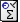
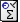

Index of /static/css/digital-climate-strike/webfonts
 Name Last modified Size Description
Name Last modified Size Description
![[PARENTDIR]](../../../../icons/back.html) Parent Directory -
Parent Directory -
![[ ]](../../../../icons/unknown.gif) greve-800-web.eot 2022-10-06 02:26 41K
 greve-800-web.otf 2022-10-06 02:26 39K
greve-800-web.woff 2022-10-06 02:26 22K
greve-800-web.woff2 2022-10-06 02:26 17K
greve-narrow-800.otf 2022-10-06 02:26 34K
katwijk-mono-black-web.eot 2022-10-06 02:26 40K
katwijk-mono-black-web.otf 2022-10-06 02:26 17K
katwijk-mono-black-web.ttf 2022-10-06 02:26 39K
katwijk-mono-black-web.woff 2022-10-06 02:26 22K
katwijk-mono-black-web.woff2 2022-10-06 02:26 18K
katwijk-mono-bold-web.eot 2022-10-06 02:26 40K
katwijk-mono-bold-web.otf 2022-10-06 02:26 17K
katwijk-mono-bold-web.ttf 2022-10-06 02:26 39K
katwijk-mono-bold-web.woff 2022-10-06 02:26 22K
katwijk-mono-bold-web.woff2 2022-10-06 02:26 17K
katwijk-mono-light-web.eot 2022-10-06 02:26 38K
katwijk-mono-light-web.otf 2022-10-06 02:26 17K
katwijk-mono-light-web.ttf 2022-10-06 02:26 37K
katwijk-mono-light-web.woff 2022-10-06 02:26 22K
katwijk-mono-light-web.woff2 2022-10-06 02:26 17K
katwijk-mono-regular-web.eot 2022-10-06 02:26 38K
katwijk-mono-regular-web.otf 2022-10-06 02:26 17K
katwijk-mono-regular-web.ttf 2022-10-06 02:26 37K
katwijk-mono-regular-web.woff 2022-10-06 02:26 22K
katwijk-mono-regular-web.woff2 2022-10-06 02:26 17K
greve-800-web.eot 2022-10-06 02:26 41K
 greve-800-web.otf 2022-10-06 02:26 39K
greve-800-web.woff 2022-10-06 02:26 22K
greve-800-web.woff2 2022-10-06 02:26 17K
greve-narrow-800.otf 2022-10-06 02:26 34K
katwijk-mono-black-web.eot 2022-10-06 02:26 40K
katwijk-mono-black-web.otf 2022-10-06 02:26 17K
katwijk-mono-black-web.ttf 2022-10-06 02:26 39K
katwijk-mono-black-web.woff 2022-10-06 02:26 22K
katwijk-mono-black-web.woff2 2022-10-06 02:26 18K
katwijk-mono-bold-web.eot 2022-10-06 02:26 40K
katwijk-mono-bold-web.otf 2022-10-06 02:26 17K
katwijk-mono-bold-web.ttf 2022-10-06 02:26 39K
katwijk-mono-bold-web.woff 2022-10-06 02:26 22K
katwijk-mono-bold-web.woff2 2022-10-06 02:26 17K
katwijk-mono-light-web.eot 2022-10-06 02:26 38K
katwijk-mono-light-web.otf 2022-10-06 02:26 17K
katwijk-mono-light-web.ttf 2022-10-06 02:26 37K
katwijk-mono-light-web.woff 2022-10-06 02:26 22K
katwijk-mono-light-web.woff2 2022-10-06 02:26 17K
katwijk-mono-regular-web.eot 2022-10-06 02:26 38K
katwijk-mono-regular-web.otf 2022-10-06 02:26 17K
katwijk-mono-regular-web.ttf 2022-10-06 02:26 37K
katwijk-mono-regular-web.woff 2022-10-06 02:26 22K
katwijk-mono-regular-web.woff2 2022-10-06 02:26 17K
Apache Server at www.torproject.org Port 443